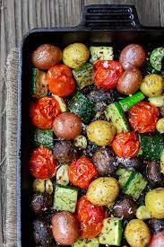

Description
Not eating enough veg? Feeling unhealthy from your take outs? Then look no further! Today we have a beautifully savoury oven vegetables dish. Quick, easy and made with cheep fresh ingredients you can find in any supermarket
Ingredients
The quantity you choose will depend on the size of your oven dishes. I have a very large pyrex version that can hold a large quantity, keep this is mind. One can half or quarter the listed quantities as desired. In truth, the ratio and quantities don't matter for this recipe at all. So long as there are at least three different vegetables it will taste amazing.
- 4 courgettes (called zucchinis in the USA)
- 5 tomatoes
- 2 onions
- Whatever color peppers you like. I like the red and yellow one's!
- 2-4 carrots if you have space
- Basil
- Oregano
- Salt
- You can add 30g or so of olive oil or butter. Avoid other oils since the taste worsens significantly. But you can easily leave all the oil out and it still tastes good.
- Feel free to add anything else you want. Take care that to make some veg taste good you may be forced to add some fat. For instance, broccoli.
Method
Do be sure to wash your veg and skin or chop off bad parts as necessary.
- Put oven on so it heats up while you chop veg. 160-180 celsius for fan. +20 celsius if not fan.
- Clean and chop all your vegetables. Placing them into your tray when done.
- Come back every 15-30 minutes take the tray out and stir. Then put back in the oven
- Repeat previous step until done.